2025
Desenvolvedor Web e Analista de TI @ MDR Advocacia
Desenvolvimento e manutencao de sistemas internos, site institucional, automacoes administrativas, seguranca e infraestrutura.
Sou Murilo Silva, desenvolvedor Full Stack e analista de TI. Atuo entre frontend, backend, automacao e infraestrutura para transformar demandas reais em experiencias digitais mais fortes, profissionais e funcionais.
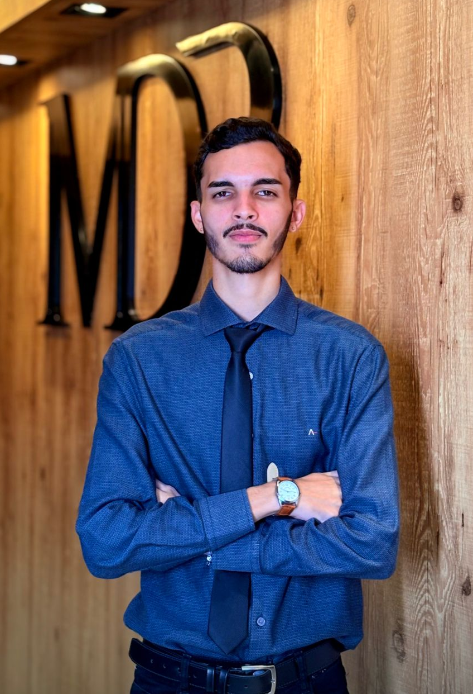
Meu diferencial esta em unir visual, codigo e contexto real de uso. Nao e so interface bonita: e solucao que funciona, comunica bem e aguenta a rotina.
Cases de site institucional, LMS, SaaS interno, produto digital e estudo de interface.
Trajetoria conectando Brasil e Portugal, ampliando repertorio tecnico, cultural e de comunicacao.
Capacidade de sair do zero, estruturar a solucao e acompanhar a evolucao com responsabilidade.
Experiencia com suporte, infraestrutura e ambiente real, o que fortalece qualidade e continuidade.
Meu trabalho mistura experiencia visual, organizacao tecnica e foco em resultado. Gosto de construir solucoes que parecam profissionais por fora e sejam confiaveis por dentro.
Interfaces responsivas, hierarquia visual forte e experiencia mais convincente.
Regras de negocio, banco de dados, APIs e automacoes para reduzir trabalho manual.
LMS, sistemas internos, PWA e sites institucionais orientados a uso real.
Base pratica em hardware, software, seguranca e operacao para sustentar o que foi entregue.
Minha base foi formada no desenvolvimento e tambem no suporte e na operacao de TI. Isso ajuda a construir solucoes mais maduras e proximas da realidade de quem usa.
Desenvolvimento e manutencao de sistemas internos, site institucional, automacoes administrativas, seguranca e infraestrutura.
Criacao full stack do Marcato, integracao com Google Calendar, comunicacoes automaticas e melhorias no portal institucional.
Montagem, manutencao, instalacao e atendimento a usuarios em ambiente real de operacao.
Ciencias e Tecnologia na UFRN, com enfase em Engenharia da Computacao, e intercambio em Engenharia Informatica no ISEC, em Portugal.
Meu percurso inclui reconhecimento em inovacao, experiencia internacional e participacao em ambientes competitivos.
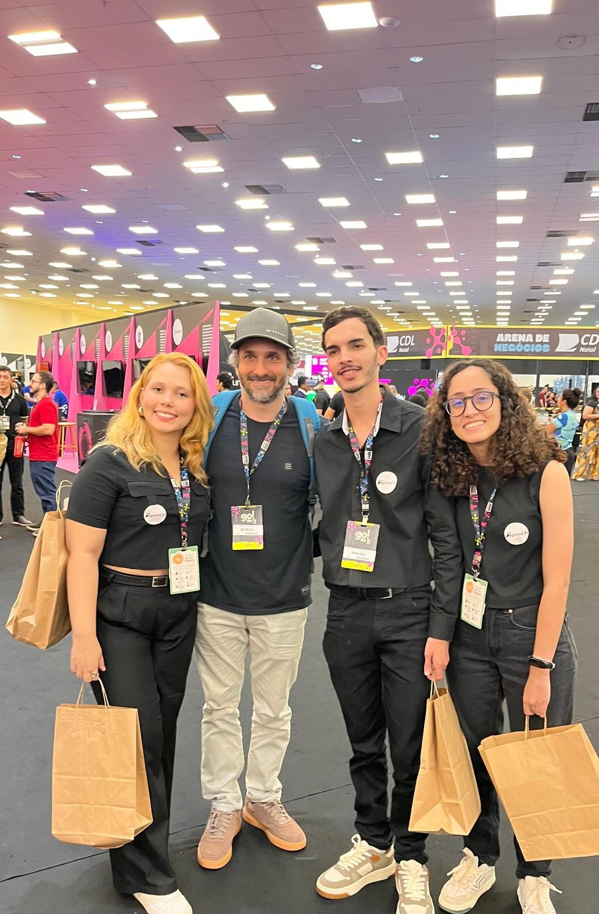
Projeto reconhecido por propor uma solucao educacional com IA funcionando offline.
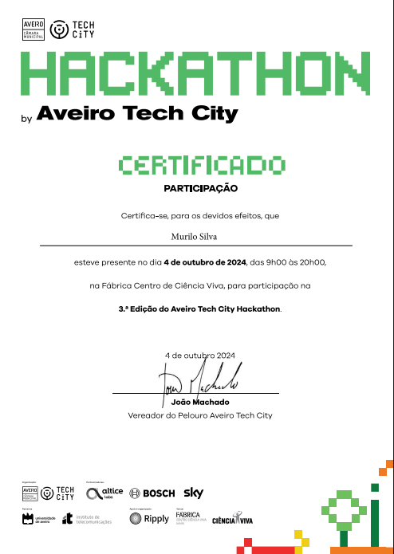
Participacao em ambiente competitivo com foco em IA e machine learning.
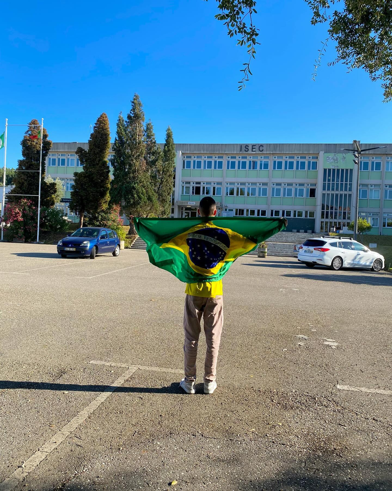
Imersao tecnica e cultural que ampliou repertorio, networking e visao de desenvolvimento.
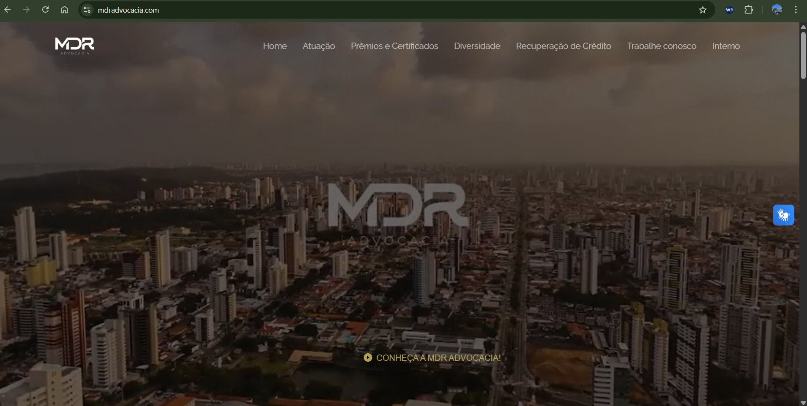
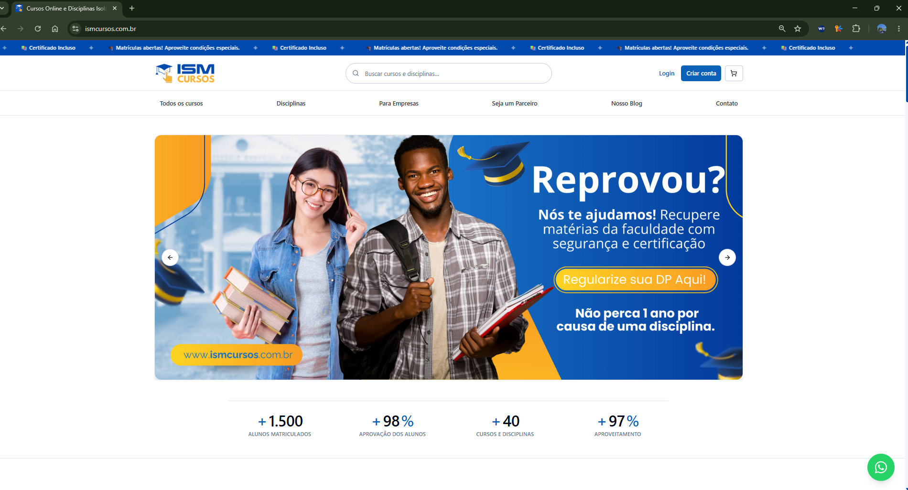
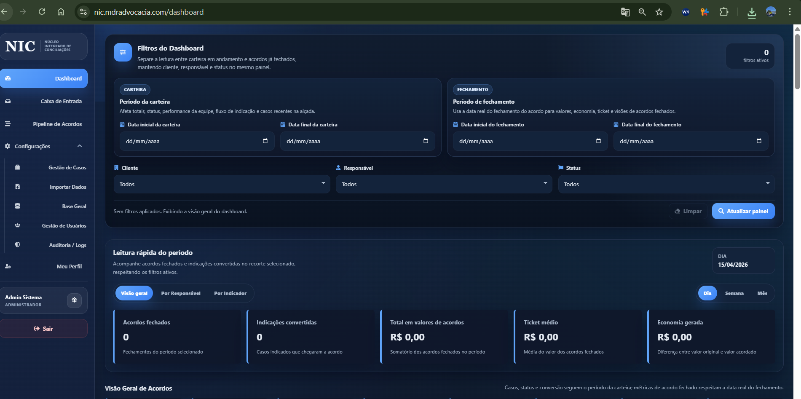
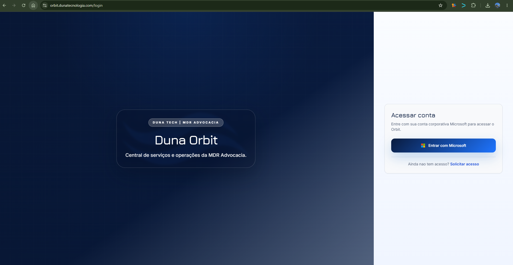
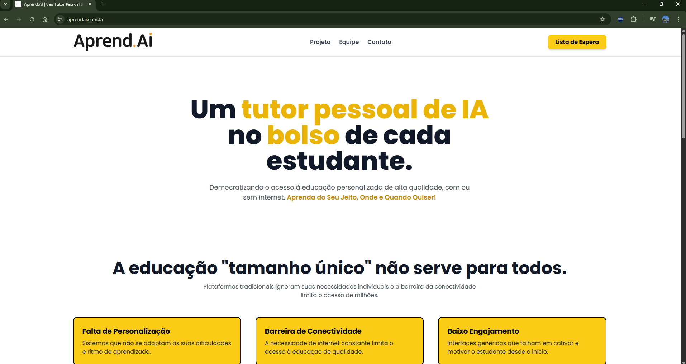
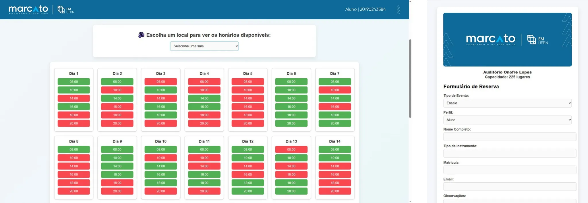
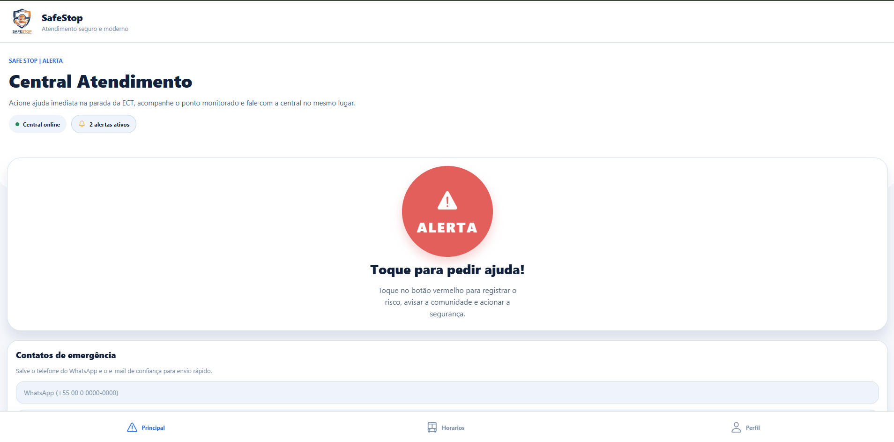
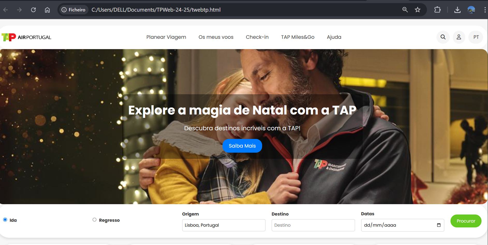
Posso contribuir com sites institucionais, plataformas, sistemas internos, automacoes e melhorias de interface. Minha proposta e entregar com cuidado visual, organizacao tecnica e responsabilidade.